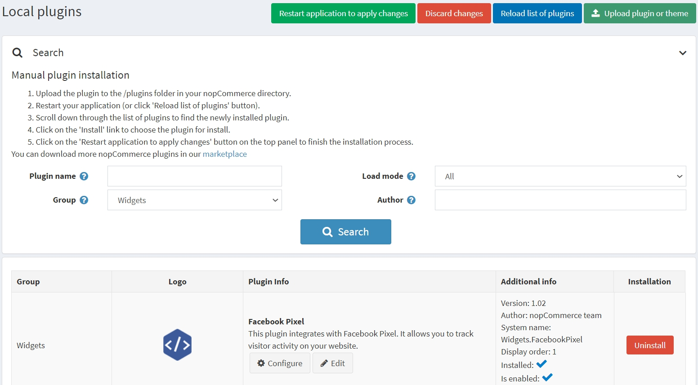
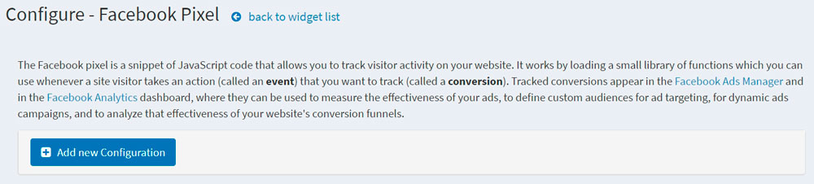
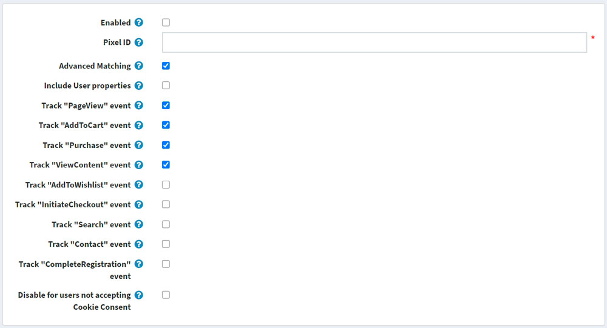

Facebook Pixel plugin
This section describes how to integrate the Facebook pixel into your store.
What the Facebook pixel is
The Facebook pixel allows you to receive information about the actions taken in your store to make your Facebook ads more relevant to your audience. The Facebook pixel can help you understand the behavior of visitors to your store and which advertising strategy works best to reach your business goals.
Tracked conversions appear in the Facebook Ads Manager and Facebook Analytics dashboard, where they can be used to measure the effectiveness of your ads, define custom audiences for ad targeting or dynamic ads campaigns, and to analyze the effectiveness of your website's conversion funnels.
What the Facebook Pixel plugin does
The Facebook Pixel plugin for nopCommerce pasts a snippet of JavaScript code that allows you to track visitor activity on your website. It works by loading a small library of functions used whenever a customer takes action.
Install and enable the plugin
The Facebook Pixel plugin is an out-of-the-box nopCommerce plugin. You can find it here: Configuration → Local plugins. To find the plugin faster, use the Group field in the search panel to filter the plugins by Widgets type: 
Install the plugin using the Install button if it is uninstalled. Then enable it by clicking the Edit button. You will see the Edit plugin details window in this case. Mark the plugin as enabled using the Is enabled checkbox and click the Save button.
How to configure the plugin
Click the Configure button. You will see the Configure - Facebook Pixel page window: 
Click the Add new configuration button.
Fill in the following form to set up the plugin: 
- Select the Enabled checkbox to enable this Facebook pixel configuration.
- Enter your Pixel ID, which you can find in the Ads Manager → Events Manager. If you have not created a pixel, follow these instructions to create one — all you need is the pixel's ID.
- Advanced Matching: if selected, some of the visitors' data (in the hashed format) will be collected by the Facebook pixel. If you implement advanced matching automatically using the Events Manager, clear this setting.
- Include User properties: select to include User properties, data about the User, in a pixel. Then, you can view User properties in the Facebook Analytics dashboard under People → User Properties.
Next, you will see the list of events. Standard events are predefined visitor actions that correspond to common, conversion-related activities, such as searching for a product, viewing a product, or purchasing a product.
- Track "PageView" event: select to enable tracking of the standard event when a person lands on the website pages.
- Track "AddToCart" event: select to enable tracking of the standard event when a product is added to the shopping cart.
- Track "Purchase" event: select to enable tracking of the standard event when an order is placed.
- Track "ViewContent" event: select to enable tracking of the standard event when a person lands on a product details page.
- Track "AddToWishlist" event: select to enable tracking of the standard event when a product is added to the wishlist.
- Track "InitiateCheckout" event: select to enable tracking of the standard event when a person enters the checkout flow prior to completing the checkout flow.
- Track "Search" event: select to enable tracking of the standard event when a search is made.
- Track "Contact" event: select to enable tracking of the standard event when a person person submits a question via contact us form.
- Track "CompleteRegistration" event: select to enable tracking of the standard event when a registration form is completed.
Note
As an additional parameter, some events include product SKU or product combination SKU; make sure that they are filled in correctly in your catalog.
- Disable for users not accepting Cookie Consent: select to disable the Facebook pixel for users not accepting Cookie Consent. You may want this if you conduct business in countries subject to General Data Protection Regulation (GDPR). You also need to activate the DisplayEuCookieLawWarning setting on the Configuration → Settings → General settings page in order to display Cookie Consent for users.
Note
The General Data Protection Regulation (GDPR) took effect on May 25, 2018, and creates consistent data protection rules across Europe. Businesses that advertise with Facebook companies can continue to use Facebook platforms and solutions in the same way they do today.
Configure custom events
Note
You can only see this panel after you have already created and saved the current configuration!
If the predefined standard events aren't suitable for your needs, you can track your own custom events, which can also be used to define custom audiences for ad optimization. You can configure them below. Specify the name and choose widget zones in which the custom event will be tracked. If you don't know which zone to use for your custom event, you can ask in our forums.